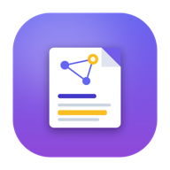

Bir not seçin veya + Yeni ile başlayın.

Şifreli, çok-cihazlı, local-first notlar.
Notların uçtan uca şifreli — operatör bile okuyamaz. Her cihazından eriş, çevrimdışı çalış, Markdown ya da zengin metinle yaz.
Local-first · PWA · sıfır-bilgi
Bir not seçin veya + Yeni ile başlayın.